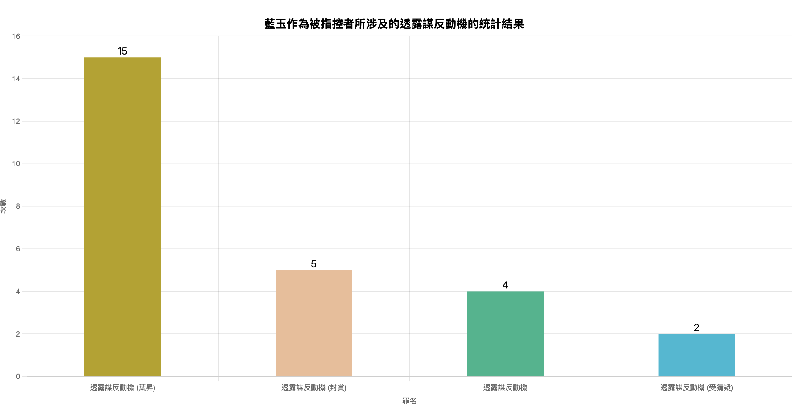
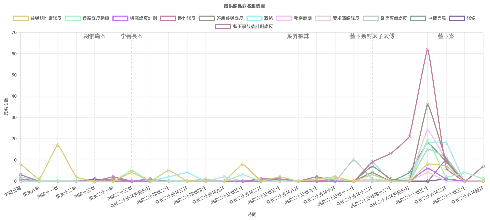
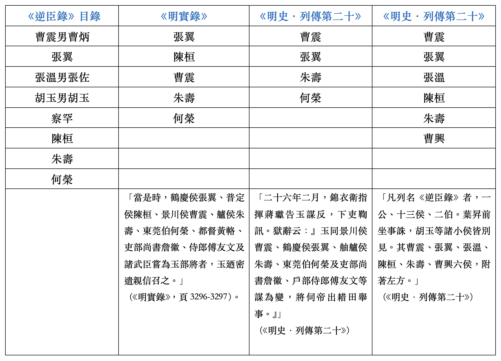
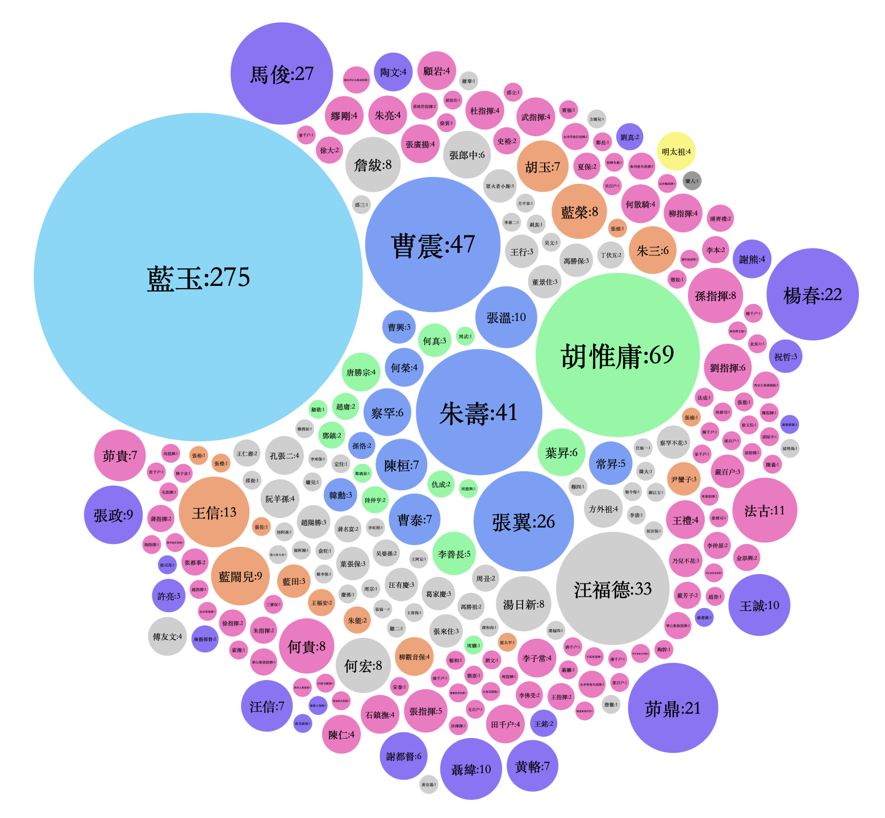
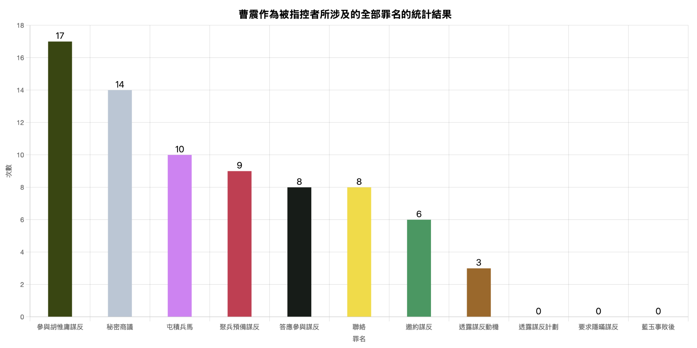
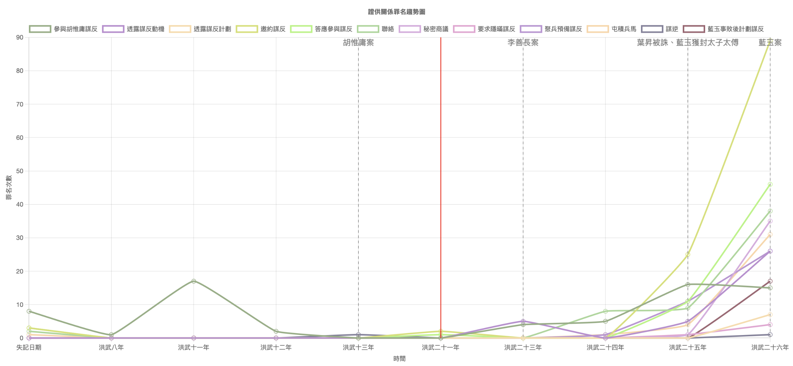

藍玉為何謀反？
1. 藍玉謀反動機的爭議
一. 《明實錄》、《明史》的記載
《明實錄》與《明史》皆認為，藍玉不滿在洪武二十五年（1392）十二月平定月魯帖木兒後，僅被封為太子太傅，因此心生怨恨，計劃謀反（《明太祖實錄》，頁3296-3297；《明史．列傳第二十》）。
二. 《逆臣錄》的記載
然而，洪薏築指出，《逆臣錄》記載，藍玉的親家靖寧侯葉昇於洪武二十五年（1392）八月被控勾結胡惟庸而伏誅，藍玉憂懼受牽連，於是計劃謀反，試圖先發制人。永樂年間（1403-1424）重修的《明實錄》記述藍玉謀反動機時，卻刪除了葉昇被誅的記錄，僅保留「不滿封賞」的說法，意圖為明太祖隱去肅清舊臣的殘酷手段（洪薏筑，2009）。
本研究的發現能與洪薏築的觀點相呼應。
2. 《逆臣錄．卷一》中藍玉的謀反動機
《逆臣錄．卷一》有26條供詞透露藍玉謀反的動機。藍玉一共曾向20位人物透露動機，其中以都督為主，共有9人，大多是在他邀請對方參與謀反時表明的。藍玉透露的謀反動機共有三項：
- 最常見的說法是親家葉昇被捕，擔心自己會被牽連；
- 其次是不滿太子太傅的封賞；
- 第三是感受到明太祖對自己的猜忌與不信任，感到朝不保夕。
藍玉謀反動機統計圖
動機一：葉昇被誅
1. 葉昇生平
根據《明史．列傳第十九》，葉昇於洪武三年（1370）「僉大都督府事」，在洪武十二年（1379）先後平定「西番」、蒙古將領伯顏帖木兒和「洮州番酋」，因而獲封靖寧侯。《明史．列傳第十九》亦指出：「涼國公藍玉，昇姻也」，顯示葉昇同時也是藍玉的親家。
2. 葉昇被誅
胡惟庸和李善長分別於洪武十三年（1380）和二十三年（1390）被誅，葉昇亦於洪武二十五年（1392）八月以「交通胡惟庸事覺」的罪名被處決（《明太祖實錄》，頁3227-3228）。根據俞本《紀事錄》，葉昇的具體罪行是「隱藏胡惟庸家火者」，並於當年六月被捕（《紀事錄箋證》，頁459）。
3. 藍玉的謀反動機
一. 李善長被誅後
根據《逆臣錄．卷一》中張翼的女婿王信的供詞，早在洪武二十三年（1390）的李善長案的一年後，藍玉已經憂心葉昇會被揭發涉及胡惟庸案，因此開始和張翼密謀（《逆臣錄》，1991，頁18-19）。
二. 葉昇被誅後
葉昇被誅後兩個月，藍玉就已深感作為葉昇的親家，自己遲早會被牽連。他曾在同年十月向都督陶文透露，打算「不如早尋箇下手處」，採取行動，先發制人（《逆臣錄》，1991，頁45）。
三. 謀反事敗前一個月
在藍玉案前一個月的洪武二十六年（1393）正月，藍玉更向兄長藍榮透露，他覺得當時明太祖對自己「好生疑忌」，「我奏幾件事都不從」，必定是因為葉昇被捕後把自己供出，「他招内有我名字」。他記為明太祖「早晚也容我不過」，因此當時已與其他武官商議，準備謀反（《逆臣錄》，1991，頁2）。從上可見，藍玉的謀反動機在葉昇被誅後逐步形成，害怕被誅連的確是他謀反的一大動機。
動機二：不滿封賞
1. 藍玉獲封太子太傅
根據《明太祖實錄》，葉昇被誅後四個月，藍玉於洪武二十五年（1392）十二月平定月魯帖木兒之亂，並在同月獲封為太子太傅（《明太祖實錄》，頁3265-3266）。根據《明史．職官一》，太子太傅「從一品掌以道德輔導太子，而謹護翼之」，實為榮譽性質的官銜。
2. 藍玉要求改變封賞不果
一. 不滿封賞
《逆臣錄．卷一》中就有多則證供，透露藍玉封賞深感不滿。藍玉長子藍閙兒就指證，藍玉在洪武二十六年（1393）正月邀約多位指揮參與謀反時透露：「我征西征北受了多少辛苦，如今取我回來，只道封我做太師，却着我做太傅，太師到着别人做了。」他不滿自己僅被封為太子太傅，而宋國公馮勝與潁國公傅友德卻能封為太子太師，認為此封賞似乎暗示自己的軍功不如兩人（《逆臣錄》，1991，頁1-2）。
二. 要求改變封賞不果
此外，《明太祖實錄》亦沿用《逆臣錄》的記載，並補充藍玉曾上奏表達不滿，但遭明太祖以「無禮」為由拒絕改變封賞，進一步令藍玉覺得皇帝猜忌自己，促使他最終決定謀反（《明太祖實錄》，頁3296-3297）。
《明太祖實錄》：「至是征西還，意覬陞爵。命為太傅。玉怒，攘袂大言曰：『吾此回當為太師，廼以我為太傅。』及時奏事。上惡其無禮，不從。玉退語所親曰：『上疑我矣。』乃謀反。」
藍玉謀反動機和計劃
從上可見，《逆臣錄》記錄了藍玉謀反的兩大動機：其一為葉昇被誅，擔心遭到牽連；其二為不滿封賞。這兩項動機都大致和藍玉計劃謀反的過程吻合。
洪武八年（1375）至洪武二十四年（1391）八月全部人物關係趨勢圖
1. 葉昇被誅後，開始準備謀反
上圖是洪武八年（1375）至洪武二十四年（1391）八月全部人物關係的折線圖。
從圖中可見，在洪武二十五年（1392）八月葉昇被誅後，各項關係的出現次數開始增加。
其中在洪武二十五年（1392）十一月，藍玉曾在該月聯絡十位指揮、千戶和百戶，要求他們籌備兵馬，準備接應謀反，顯示藍玉已經確定要謀反，並展開了軍事準備（《逆臣錄》，1991，頁45）。
洪武二十五年（1392）十一月，藍玉邀約武官準備兵馬，接應謀反
2. 要求改變封賞不果後，加緊謀反的準備
藍玉返京後的十二月，他就因不滿封賞，上書明太祖又被拒，確信「上疑我矣」，加強了謀反的動機（《明太祖實錄》，頁3296-3297）。
根據折線圖，各種人物關係的出現次數從當月起大幅攀升，包括「邀約謀反」、「聯絡」、「答應參與謀反」，反映藍玉在當月頻繁聯絡其他功臣與都督，邀請他們加入謀反計劃，謀反計劃正式開始。
哪些功臣參與了謀反？
1. 《明太祖實錄》、《明史》中被點名的功臣
自洪武二十五年（1392）葉昇被誅後，藍玉開始籌劃謀反，並積極邀請其他功臣加入行動。在《逆臣錄》目錄、《明太祖實錄》與《明史》中，曹震、張翼、陳桓、朱壽與何榮是最常被提及牽涉藍玉案的五位功臣，其中又以曹震和張翼排序最前，提及次數最多。
史書中提及牽涉藍玉案的功臣和名字排序
3. 《逆臣錄．卷一》中出現次數最多的功臣
在《逆臣錄．卷一》中所記錄的七百多條人物關係中，曹震、朱壽與張翼是參與關係數量最多的功臣，顯示他們是參與程度最深的功臣。本研究因此會進一步分析他們與藍玉之間的關係、各自的謀反動機，以及在整體謀反行動中的具體作用。
《逆臣錄．卷一》中所提及的全部人物及其出現次數
功臣一：曹震
1. 藍黨骨幹
曹震參與了《逆臣錄．卷一》中47條的人物關係，是參與程度最深的功臣。《明史．列傳第二十》亦有載：「藍玉敗，謂與震及朱壽誘指揮莊成等謀不軌，論逆黨，以震為首，並其子炳誅之。」曹震被視為「藍黨」的核心人物，甚至被定為首謀。
2. 曹震生平
根據《明史．列傳第二十》，曹震早年追隨明太祖起兵，後出任指揮使，並於洪武十二年（1379）獲封為景川侯。封侯後，他兩度與藍玉合作，前後「從藍玉征雲南」及「同藍玉核征南軍士」，建立了長期的合作關係（《明史．列傳第二十》）。
3. 曹震和藍玉的關係
一. 洪武二十一年（1388），邀約參與謀反
在眾多功臣中，藍玉和曹震的關係最為親密，《逆臣錄．卷一》中，曹震小妾喜奴就指證，曹震曾透露，早在洪武二十一年（1388），藍玉就提出要曹震「同他起意」（《逆臣錄》，1991，頁41）。
二. 聯絡往來
在洪武二十六年（1393），藍玉甚至表示希望與曹震「做親家」（《逆臣錄》，1991，頁14）。此外，藍玉曾四次聯絡曹震，均由藍玉長子藍鬧兒親自傳話，可見兩人關係之親近。
藍鬧兒作為曹震和藍玉之間的聯絡人
4. 曹震的態度
儘管關係親密，曹震對謀反的態度卻相當矛盾。
《逆臣錄．卷一》中，曹震長子曹炳指證，在洪武二十六年（1393）二月初八晚，即藍玉被告發的前一夜，曹震曾與藍玉及許都督三人共飲。當時曹震感慨：「如今天下太平，不用老功臣似以前，我每一般老公侯都做了反的也都無了。」反映出他對功臣重要性下降的怨懟情緒（《逆臣錄》，1991，頁11）。
然而，曹震卻在同一晚酒後向母親坦承，早在洪武二十一年（1388），他已不願參與藍玉的謀反計劃，更指出「王府也修造完了，如今做了這般大職分」，他更不情願謀反，顯示他對參與謀反的矛盾心理（《逆臣錄》，1991，頁41）。
5. 曹震的參與
儘管態度矛盾，曹震卻從洪武二十六年（1393）正月起一直有參與藍玉謀反的計劃，包括和藍玉秘密會談、準備武器和兵馬。
曹震涉及的全部人物關係和及其次數
參與一：秘密會談
首先，他多次和藍玉秘密會談，會談對象還涉及四位都督和兩位指揮。
曹震與藍玉和多名都督及指揮秘密商議
參與二：籌備武器
一. 答應準備武器
另外，他亦親自協助籌備兵馬與軍器。根據《逆臣錄．卷一》，張海彭指證，曹震在洪武二十六年（1393）正月初七日答應為藍玉準備軍器（《逆臣錄》，1991，頁12）。
二. 完成準備武器
同月二十九日，曹震小妾金氏還看到曹震船上有「紅甲五副、刀一十四把，鎗一十三條」（《逆臣錄》，1991，頁13-14）。對此，曹震解釋這些武器是受藍玉吩咐帶來的武器，但為了掩人耳目，曹震卻對火者僕役謊稱，那批武器「都奏過了」，都已向朝廷申報過（《逆臣錄》，1991，頁13-14、33）。
三. 準備動用武器，配合謀反
幾日後，二月初五，藍玉長子藍鬧兒就幫父親傳話，通知曹震隨時留意消息，準備動用武器配合謀反（《逆臣錄》，1991，頁14）。
甚至在藍玉被告發的前一夜，二月初七，曹震醉後向兒子透露，他要聯絡手下的府軍前衛指揮，預備在四、五月謀反（《逆臣錄》，1991，頁11-12）。由此可見，曹震積極地為藍玉籌備兵馬，配合謀反。
功臣二：朱壽
1. 朱壽生平
第二位主要參與藍玉謀反的功臣為朱壽，他於洪武二十年（1387）獲封為舳艫侯（《明史．列傳第二十》）。
2. 朱壽和藍玉的關係
根據《逆臣錄．卷一》記載，朱壽與藍玉關係密切。朱壽本人與都督黃駱都供稱，朱壽曾在洪武二十六年（1393）正月向多位武官透露，其子朱三早年曾參與胡惟庸謀反，後來被赦免，就隨藍玉出征，受到藍玉的照顧，他因此特別感激藍玉，直言「本官好生喜他」（《逆臣錄》，1991，頁23、27）。
2. 朱壽的參與
受到藍玉照拂之恩，朱壽參與藍玉的謀反計劃。他在洪武二十六年（1393）正月把兩位都督及麾下的九位武官介紹給藍玉，邀約他們參與謀反（《逆臣錄》，1991，頁23、27）。他本人亦多次攜子朱能前往藍玉府邸，共同商議謀反計劃，顯示怹且有積極和藍玉合作謀反（《逆臣錄》，1991，頁23）。
朱壽在洪武二十六年（1393）正月邀約兩位都督和九位武官參與謀反
功臣三：張翼
1. 張翼生平
第三位功臣是張翼。根據《明史．列傳第二十》，張翼早年隨父親在明太祖麾下征戰，後升任「僉都督府事」，隨藍玉征討雲南，業因此在洪武十七年（1384）獲封為鶴慶侯。
2. 張翼的動機
一. 胡黨成員
《逆臣錄．卷一》中記載，張翼曾招認自己早在洪武十一年（1378）時，「為見胡惟庸行事，好生有權」，便和其他功臣一同參與胡惟庸謀反。他雖然未曾被揭發，卻一直心懷隱憂（《逆臣錄》，1991，頁16-17）。
二. 恐懼被誅
在洪武二十三年（1390）李善長案發後，張翼曾於洪武二十五年（1392）正月向女婿王信的兄長王禮透露，他擔心自己隨時會被揭發，感到朝不保夕（《逆臣錄》，1991，頁18-19）。
三. 參與藍玉謀反
在同年十二月，張翼又向女婿王信透露，藍玉邀請他參與謀反，他眼見葉昇在八月被控勾結胡惟庸而被誅，「料想我久後為胡黨事也熬不出去」，因此決定接受邀約（《逆臣錄》，1991，頁16-17）。
3. 張翼的參與
在表明參與意向後，張翼立即請王信轉告其兄、龍虎衛前所鎮撫王禮一同加入謀反（《逆臣錄》，1991，頁23）。至翌月的洪武二十六年（1393）正月，張翼進一步指示麾下四位總甲與百戶準備兵馬，預備謀反（《逆臣錄》，1991，頁20）。
張翼在洪武二十六年（1393）正月邀約四位總甲與百戶參與謀反
其他功臣
1. 兩類的涉案功臣
在《禦製逆臣錄序》中，明太祖將涉案功臣分為兩類：
第一類「皆係胡、陳舊黨」，他們「一聞陰謀，欣然而從」，是藍玉謀反計劃的積極參與者，曹震、朱壽與張翼顯然屬於這類。
第二類為「無義公侯」，他們「雖不為首，謀危社稷」，但「任他所為，坐觀成敗，欲為臣下之臣」，即未積極參與謀反，但亦未加以制止（《逆臣錄》，1991，頁2）。
2. 「無義公侯」
曹震、朱壽與張翼顯然屬於前者，他們屢次與藍玉商議並實際籌備兵馬，是謀反行動的核心人物。
相對而言，《逆臣錄》中亦有部分功臣雖被指證曾表示支持謀反，但在《卷一》中並無任何他們實際支持謀反的行動的記載，屬於第二類的旁觀者。此類功臣包括全寧侯孫恪、宣寧侯曹泰和懷遠侯曹興。
3. 「無義公侯」例子
一. 同意接應藍玉
張溫就指證東平侯韓勳曾於洪武二十六年二月十八日透露，孫恪、曹泰與曹興「先前都已是胡黨」，在葉昇被誅，並「把見在的公侯都指著」後，「煩惱此事」，擔憂自身亦將被揭發，於是「已商量接應他俚」，表示經過商議後同意接應藍玉（《逆臣錄》，1991，頁24-25）。
韓勳指證孫恪、曹泰與曹興等胡黨同意接應藍玉謀反
二. 但沒有實際行動
然而，《逆臣錄．卷一》中並沒有記錄他們有如曹震等人一般招兵買馬、部署軍力的實際行動。
三. 「坐藍玉黨死」
儘管如此，根據《明史》，這三位功臣都「坐藍玉黨死」，與謀反核心成員同遭處決，反映出當時黨獄之嚴酷（《明史．列傳第二十》；《明史．列傳第二十一》）。
涉及藍玉案的功臣的特點
一. 大多和藍玉關係甚親
二. 不少被指控參與胡惟庸案
李善長案和葉昇案後害怕被誅連是不少功臣參與藍玉謀反的動機。
三. 各功臣的參與程度不一
功臣中以曹震、朱壽與張翼參與程度最深，三人不僅屢次與藍玉會面，更實際參與兵馬與軍器的籌備。亦有若干功臣如孫恪、曹泰與曹興，雖曾表示願意接應藍玉，卻未見實際行動，但都同樣「坐藍玉黨死」，可見當時黨獄之嚴酷。
藍玉如何計劃謀反？
洪武八年（1375）至洪武二十四年（1391）八月全部人物關係趨勢圖
2. 洪武二十五年（1392），開始籌劃謀反
如前所述，藍玉自洪武二十五年（1392）八月葉昇被誅後，開始積極籌劃謀反。同年十一月，他著手招募兵馬，邀請多位武官參與行動。十二月，因不滿僅獲封太子太傅，上奏要求改封未果，他進一步招募更多武官，推進謀反計劃。
洪武二十六年（1393）正月的全部人物關係及其次數

4. 洪武二十六年（1393）正月，全力邀約謀反
一. 邀約謀反
至洪武二十六年（1393）正月，即謀反事敗前一個月，藍玉和其他功臣邀約了更多人參與謀反，當月邀約謀反的紀錄就有62次，是上月的兩倍以上。
二. 透露謀反動機
邀約過程中，許多邀約者與被邀者都表達自身參與謀反的動機，「透露謀反動機」因此也有19次。
三. 秘密聯繫，籌備兵馬
此外，藍玉黨人之間亦加強彼此聯繫，籌備兵馬與軍器，「秘密商議」的記錄因此有24次，和籌備兵馬有關的也共有33條。
洪武二十六年（1393）二月的全部人物關係及其次數

5. 洪武二十六年（1393）二月，集中協調兵馬
一. 「邀約謀反」次數減少
進入洪武二十六年（1393）二月，「邀約謀反」的次數顯著減少，反映藍玉與其他功臣已大致完成對武官的招募工作。
二. 「聯絡」和「聚兵預備謀反」次數增加
他們因此把行動重心轉向內部協調，行動集中在互相聯絡，協調軍事部署，「聯絡」和「聚兵預備謀反」因此是發生次數最多的關係，分別有18次和11次。然而，藍玉在二月八日就被告發謀反，計劃失敗。
邀約謀反、招兵買馬
1. 縱觀《逆臣錄．卷一》十二種共七百多條的人物關係，「邀約謀反」發生的次數最多，共有113次。

洪武八年（1375）至洪武二十四年（1391）八月的全部人物關係
所有涉及「邀約謀反」關係的人物及其次數

2. 邀約者
一. 藍玉
其中以藍玉次數最多，共有61次邀約謀反的記錄，反映了他謀反主謀的身份。
二. 朱壽
其次為功臣朱壽，他於洪武二十六年（1393）正月邀約了兩位都督及九位武官（《逆臣錄》，1991，頁23、27）。
三. 都督
此外，都督聶緯與馬俊亦分別於洪武二十五年（1392）閏十二月與洪武二十六年（1393）正月，邀約了近二十名中下級武官（《逆臣錄》，1991，頁34-35；24）。
3. 被邀約者：武官
一. 鎮撫、指揮、千戶與百戶
圖中氣泡較小者多為被邀約者，從顏色分布可見，這些人物多為中下級的武官（粉色），包括鎮撫、指揮、千戶與百戶。他們在日常和前線執行軍令，幫將領管理基層兵士。
二. 整理兵馬，響應謀反
因此，在「聚兵預備謀反」的關係中，這類中下級軍官成為了主要的參與人物，他們受藍玉、張翼與曹震等功臣指示，整理他們管理的兵馬，按指示響應謀反，例如張翼就曾在洪武二十六年正月，要求百户劉文及總甲金真六、趙善和僧奴「收拾整著，聽候我調用」，接應藍玉謀反（《逆臣錄》，1991，頁20）。

所有涉及「聚兵預備謀反」關係的人物及其次數
4. 被邀約者：佃戶
此外，功臣底下的佃戶也是藍玉黨人的招募對象，其中的代表人物就是藍玉的佃戶汪福德，他受藍玉的手下指使，招募了十三名佃戶響應謀反，計劃配合京師的政變，在民間生事，製造動亂，擴大謀反的影響範圍（《逆臣錄》，1991，頁9）。

佃戶汪福德在洪武二十六年正月招募佃戶響應藍玉謀反
5. 被邀約者：僕役
另外，藍玉與武官之間亦頻繁透過僕役往來聯繫，運送兵器與軍馬，這些僕役（灰色）因而成為「屯積兵馬」關係中的主要參與者之一。藍玉家僕奴察罕不花就指證藍玉洪武二十六年正月年間，派慶孫、顧二、祝官保和定住等奴僕，向陳千戶、張能、陳指揮等六位武官借取兵馬（《逆臣錄》，1991，頁4-5）。

所有涉及「屯積兵馬」關係的人物及其次數
藍玉計畫在何時謀反？
1. 藍玉謀反時間的爭議
一. 《逆臣錄》中的四種說法
洪薏筑指出，《逆臣錄》全書中對謀反時間共有四種說法，包括：「等上位茶飯時一同下手」、「等今年（洪武二十六年）四、五月間」、「洪武二十六年正月十六日大祀天地」、以及「二月半勸農時下手」。
二. 傳統認為是「二月半勸農」
其中，「二月半勸農」的說法出現次數最多，共有13人指證（洪薏筑，2009）。《明史》亦採納此說，《明史．列傳第二十》記載，錦衣衛指揮蔣瓛揭發藍玉謀反時，藍玉黨人供稱：「將伺帝出耤田舉事」。
2. 「二月半勸農」的疑點
一. 勸農儀式臨時擇日決定
她指出，勸農儀式是否舉行往往需視天氣而定，因此通常都臨時擇日，難以事先確定。
二. 明太祖不一定會親臨儀式
而根據統計，洪武二年（1387）至三十一年（1398）間共舉行28次耤田儀式，而明太祖親臨的只有12次，「二月半」下手的說法因此難以成立（呂景琳，1994）。
本研究觀點
本研究認為，《逆臣錄》中的謀反日期記錄具有逐漸明朗化的趨勢。藍玉即使未必會選擇勸農日當天動手，亦極可能在洪武二十六年二月內發動行動。
1. 洪武二十六年正月：未敲定日期
首先，如前所述，藍玉在洪武二十五年（1392）八月葉昇被誅後開始計劃謀反。然而，據《逆臣錄．卷一》中東莞伯何榮之弟何宏的證供，藍玉在洪武二十六年（1393）正月十二日向尚寶司司丞詹紱透露謀反計劃時，僅表示要趁「如今上位病纏在身，殿下年紀又小，天下軍馬都是我總着」的局勢發動，並未明言具體日期（《逆臣錄》，1991，頁26-27）。
2. 洪武二十六年正月尾：仍然未敲定
即使在同月的二十九日，藍玉也是告訴兄長藍榮：「若事成時，我這裏有軍馬，等我揀了日子，我便着人來叫你」，似乎並未敲定具體的謀反日期（《逆臣錄》，1991，頁4）。
3. 洪武二十六年二月初一：形勢改變
然而，在二月初一，局勢出現明顯變化。何宏指證，詹紱覺得「前日涼國公謀的事，上位知覺了」，何宏於是在當晚把消息通知給藍玉（《逆臣錄》，1991，頁26-27）。
4. 洪武二十六年二月初三：謀反日期日漸明確
一. 二月初三：「早晚要下手」
結果兩日後，藍玉就在二月初三告訴胡玉：「近日上位果然疑我，必是不肯留的意」，要他預備接應謀反，並強調自己「早晚要下手」（《逆臣錄》，1991，頁21）。
二. 二月初八：預備謀反
五日後在二月初八日，茆鼎就幫藍玉傳話，通知胡玉：「凉國公教上覆你，着你准備下人伺候」，可見藍玉謀反決心與時機已趨明確（《逆臣錄》，1991，頁21）。
5. 總結
由此可見，藍玉計劃中謀反的日期有日漸明朗的趨勢。儘管他未必選擇在「二月半勸農日」當日動手，但多項證供顯示，他極可能於洪武二十六年（1393）二月內發動行動，因為他認為明太祖已對他產生極大的疑心，他試圖先發制人。
6. 洪武二十六年二月初八，謀反事敗
然而，根據《逆臣錄．卷二》記載，馬軍丁僧兒指證藍玉於二月初八「入朝未回」（《逆臣錄》，1991，頁121）。《明史．列傳第二十》亦有載，藍玉即在此後被錦衣衛指揮蔣瓛揭發謀反，下獄受審。《禦製逆臣錄序》更明言：「謀泄機露，族滅者族滅」，證實了藍玉的謀反行動尚未實施便已敗露（《逆臣錄》，1991，頁2）。
《逆臣錄》有哪些疑點？
1. 《逆臣錄》史料價值
《逆臣錄》成書於洪武二十六年（1393）五月，即藍玉案發生後三個月，記錄了大量藍黨人供詞，長期以來被學界視為研究藍玉案最早的原始文獻。
2. 《逆臣錄》疑點
然而，《逆臣錄》本身亦存在諸多疑點。早在1994年，學者呂景琳就在〈藍獄黨案考〉中指出該書記載藍玉案時的多項可疑之處，包括：
一. 書中未收錄藍玉與曹震本人的證供；
二. 謀反時間的說法不一：
有洪武二十六年正月、二月半勸農日與四、五月等多個版本，而且多由低級武官指證，鮮見出自功臣或都督之口。
三. 計劃謀反的過程不合理：
多條供詞聲稱在洪武二十六年正月至二月間，數千人次頻繁進出藍玉府邸，密謀謀反，在當時明太祖實行高度監控的情況下，這種規模的行動不可能存在（呂景琳，1994）。
除了上述觀點之外，本研究亦進一步發現《逆臣錄》尚存以下幾項疑點：
疑點一：藍玉是否曾參與胡惟庸案？
1. 明太祖聲稱藍玉曾參與胡黨
在《禦製逆臣錄序》中，明太祖在清算藍玉罪行時曾提及：
「其藍玉，幼隸開平，數從征伐，屢有戰功。初與胡、陳之謀，朕思開平之功及親親之故，宥而不問，累加拔摧。」（《逆臣錄》，1991，頁2）
明太祖聲稱，藍玉曾參與胡惟庸、陳寧的謀反計劃，但他顧念開平王常遇春的軍功與「親親」關係，選擇寬赦藍玉，不予追究。這似乎說明，藍玉有份參與胡惟庸案，而明太祖早已知悉。
2. 《逆臣錄．卷一》中的證供
一. 王行的證供
然而，《逆臣錄．卷一》中僅有王行一人的證詞指證藍玉與胡惟庸有直接聯繫。王行曾於藍玉宅邸「坐館教書」，他的供詞提到，洪武十二年間，藍玉「常與胡丞相往來交結」。他還描述有一日藍玉與胡惟庸飲酒時，自己也在場，胡惟庸就對藍玉說：「我和你所謀的事成時，這秀才也有大名分。」似乎暗示藍玉和胡惟庸秘密商議謀反（《逆臣錄》，1991，頁2）。
二. 證供不合理
然而，若胡惟庸與藍玉確實密謀謀反，理應極度保密，不太可能在一個讀書先生前透露具體計劃，王行的證詞因此並不可信。
3. 功臣的證供
一. 功臣被指證參與胡黨
其次，《逆臣錄．卷一》中共有四份證供，指證部分牽涉藍玉案的功臣亦曾參與胡惟庸案。相關證供來自功臣張翼、何榮、陳桓和都督王誠。
其中，張溫、陳桓、張翼和曹興多次被指證參與胡惟庸的酒席，並在席間商議謀反。張翼與陳桓更在自己的供詞中坦承曾經參與胡黨活動。
二. 無功臣指證藍玉參與胡黨
然而，這些證供中卻沒有任何一份指證藍玉曾與胡惟庸往來，不合乎王行證供中藍玉「常與胡丞相往來交結」的描述，因此令人懷疑藍玉勾結胡惟庸的真實性（《逆臣錄》，1991，頁2）。
《逆臣錄．卷一》中被指證曾參與胡惟庸案的藍玉案功臣

5. 藍玉未必曾參與胡黨，那又為何畏懼親家葉昇「坐胡黨伏誅」？
一. 李善長案時的先例
學者朱鴻指出，《明史．列傳第十四》有載，功臣鄧愈之子鄧鎮娶了李善長外孫女，最終因李善長案被「坐奸黨誅」，顯示即使功臣本人未必涉案，亦可能因姻親關係而遭誅連（朱鴻，1980；《明史．列傳第十四》）。
二. 葉昇「把見在的公侯都指着」
《逆臣錄．卷一》亦提供相關證據。韓勳曾向何榮透露，藍玉認為葉昇被捕後，「把見在的公侯都指着」，也就是將仍在世、尚未因胡惟庸案遭誅的功臣一一指證。藍玉因此「心裏好生不安，只怕連累他」，認為自己遲早難逃株連，於是決定「要下京來做一手」，意圖在明太祖發難前先發制人（《逆臣錄》，1991，頁24-25）。
綜上所述，藍玉謀反的主要動機，並非直接源於參與胡惟庸案，而是出於對其與葉昇之間姻親關係可能導致被誅連的恐懼。
疑點二：藍玉究竟何時開始計劃謀反？
1. 藍玉謀反動機
如前所述，《逆臣錄》所記載的藍玉謀反動機主要有兩項：一為親家葉昇被誅，二為對僅獲封太子太傅的不滿。《明實錄》與《明史》則只保留後者，未提及葉昇事件。
而葉昇被誅發生在洪武二十五年（1392）八月，藍玉獲封太子太傅則在同年十二月。
2. 《逆臣錄》：藍玉在洪武二十一年（1388）開始計劃謀反
一. 都督楊春
都督楊春指證，藍玉曾於北征途中寄信勸他辭職，並請朝廷派他「在外領軍」，方便日後和藍玉「會合做一件大事」，似乎暗示邀約共謀謀反（《逆臣錄》，1991，頁14）。
二. 曹震
曹震亦指證，「那藍家二十一年時，在四川和我說了一遭，也說這等話」，早在洪武二十一年（1388），藍玉就曾邀約他參與謀反（《逆臣錄》，1991，頁40）。
3. 洪武二十一年（1388）開始計劃的說法不合理
然而，洪武二十一年（1388）時，胡惟庸已被誅近十年，李善長與葉昇分別要在兩年和四年後才被誅。
再者，以上兩人的證詞亦沒有說明藍玉在洪武二十一年（1388）計劃謀反的動機，未能給予任何合理原因解釋藍玉為何在當時就開始計劃謀反。
因此，藍玉早在洪武二十一年即已籌劃謀反的說法並不合理，很可能是明太祖為了加重藍玉罪名，刻意營造他宿心積慮計劃謀反的說辭。
紅線是洪武二十一年（1388）的位置
疑點三：藍玉打算如何部署兵力，發動政變？
1. 《逆臣錄．卷一》欠缺對謀反具體軍事計劃的記載
明太祖在《禦製逆臣錄序》中明確指控藍玉等人「設計伏兵，謀為不軌」（《逆臣錄》，1991，頁2）。如前所述，《逆臣錄．卷一》中確實記載了大量藍玉聯絡功臣、都督及武官，要求他們準備兵馬與軍器、響應謀反的證詞。
然而，卷一中卻極少提供藍玉在動員後，如何部署兵力、實施政變的具體軍事計劃。
2. 五則提及藍玉謀反安排的證供
《逆臣錄．卷一》中僅有五則提及藍玉謀反安排的證供，但大部份都是指證：藍玉要求功臣與武官預備兵馬，要趁「如今上位病得重了，殿下年紀小」之際，「等我揀了日子」後，就「我着你望前，你便望前，着你望後，你便望後」接應謀反（《逆臣錄》，1991，頁26、4）。說法籠統，未有提及明確的日期與軍事部署。
3. 藍玉僕役董景住的供詞
唯一較具體的記載來自藍玉僕役董景住的供詞。他表示他在洪武二十六年（1393）二月初八，曾向另一名僕役趙帖木透露，藍玉計劃率領一百多名部將，「一箇當五箇」，「在西華門聽候，等上位茶飯時一同下手」（《逆臣錄》，1991，頁3）。這是卷一中唯一提及起兵地點的記錄。
然而，董景住與趙帖木皆為藍玉的家僕，並非參與謀反計劃的核心功臣或都督。那些真正被指為謀反骨幹的高級軍事人物，卻無一人在供詞中提及具體的軍事部署和政變的策略，是《逆臣錄．卷一》中的一大疑點。
結論
1. 研究方法和目的
總結全文，本研究利用互動式關係圖，可視化了《逆臣錄．卷一》中七百多條的人物關係，分析藍玉與多位功臣之間的聯繫與謀反計劃，進一步探討藍玉案的動機、行動過程與史料可疑之處。
2. 藍玉為何謀反？
一. 洪武二十五年（1392）八月親家葉昇因「坐胡黨」而被誅
研究認為，根據《逆臣錄》，藍玉有兩個主要的謀反動機：第一，洪武二十五年（1392）八月親家葉昇因「坐胡黨」而被誅，藍玉憂慮自身亦將被牽連。
二. 同年十二月，要求改變封賞不果
第二，同年十二月，藍玉上奏要求明太祖改變太子太傅的封賞不果，令他更加確信明太祖對自己的疑心，最終決定策動謀反，先發制人。
3. 哪些功臣參與了謀反？
在葉昇被誅後，藍玉開始密集聯絡與他關係密切的功臣，其中不少人被指控曾涉入胡惟庸案，他們對李善長案或對葉昇被誅感到恐懼，因此參與謀反。然而，各功臣參與程度不一，其中以曹震、朱壽與張翼三人最為積極，不僅屢次與藍玉會面，更親自籌備兵馬與軍器。
4. 藍玉如何計劃謀反？
藍玉自洪武二十五年十二月至二十六年（1393）正月的行動以邀約參與謀反和準備兵馬為主。至二月，動員已基本完成，行動重心因此轉為內部協調與軍事部署。
邀約謀反時，藍玉以管理基層軍隊的中下層武官為主要對象，包括鎮撫、指揮、千戶與百戶，他們負責整編兵馬，按指令響應謀反。此外，藍玉亦指使佃戶在民間響應行動，並派僕役協助運輸兵器與軍馬。
5. 藍玉計畫在何時謀反？
傳統史料認為，藍玉原計劃於二月半勸農日發動政變，但此說法已遭學界質疑。本文認為，《逆臣錄》中的證供顯示藍玉謀反的日期雖未明確，但確實有逐漸具體化的趨勢，他即使非在勸農日當日動手，也極可能於洪武二十六年二月內發動政變。
6. 《逆臣錄》有哪些疑點？
最後，儘管《逆臣錄》為研究藍玉案最早的原始文獻之一，本文認為其內容仍存下列幾項疑點：一、藍玉是否曾參與胡惟庸案，史料說法成疑；二、《逆臣錄》對藍玉開始籌劃謀反的時間的記載有矛盾；三、書中缺乏具體謀反軍事部署與行動細節的記錄。